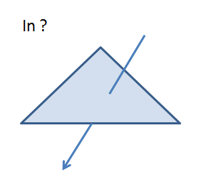
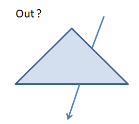
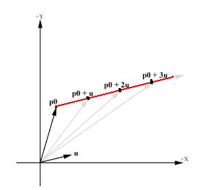
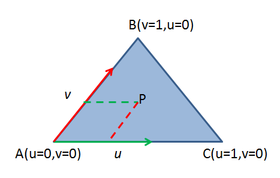

求解射线与三角形交点的算法
求解射线与三角形的交点，在光线追踪、碰撞检测、目标拾取等场景中经常使用，是计算机图形学中最基本的操作。下面介绍常用的求解射线与三角形交点的算法。
问题定义
求解射线与三角形交点示意图如图1所示。


射线的参数方程如下，其中O是射线的起点，D是射线的方向，t是常数。
$$O+Dt$$
该方程的含义是一个点从起点O开始，沿着方向D移动任意长度，得到终点R，根据t值的不同，得到的R值也不同，所有这些不同的R值便构成了整条射线，比如下面的射线，起点是P0，方向是u，p0 + tu也就构成了整条射线。

三角形的参数方程如下，其中$V_0$，$V_1$和$V_2$是三角形的三个点，$u, v$是$V_1$和$V_2$的权重，$1-u-v$是$V_0$的权重，并且满足$u>=0, v >= 0,u+v<=1$。
$$(1-u-v)V_0+uV_1+vV_2$$

直观方法
求解射线与三角形的交点最直观的方法如下：
- 判断射线是否与平面相交
- 判断点是否在三角形内
但该方法需要额外计算三角形所在平面，效率不高。
Moller-Trumbore方法(Journal of Graphic Tools, 1997)
Moller-Trumbore方法中，求射线与三角形的交点即求解如下方程:
$$O+Dt=(1-u-v)V_0+uV_1+vV_2$$
其中t,u,v是未知数，其他都是已知的。
移项并整理，将t,u,v提取出来作为未知数，得到下面的线性方程组：
$$\begin{bmatrix}
-D& V_1-V_0 &V_2-V_0
\end{bmatrix}\begin{bmatrix}
t\u\v
\end{bmatrix}=O-V_0$$
现在开始解这个方程组，这里要用到两个知识点，一是克莱姆法则，二是向量的混合积。
令$E_1 = V_1 - V_0，E_2 = V_2 - V_0，T = O - V_0$上式可以改写成:
$$\begin{bmatrix}
-D& E_1 & E_2
\end{bmatrix}\begin{bmatrix}
t\u\v
\end{bmatrix}=T$$
根据克莱姆法则，可得到t,u,v的解为：
$$
\begin{bmatrix}
t\u\v
\end{bmatrix}
=\frac{1}{\begin{vmatrix}
-D & E_1 & E_2
\end{vmatrix} }
\begin{vmatrix}
T&E_1&E_2\
-D& T& E_2\
-D & E_1& T
\end{vmatrix}
$$
根据混合积公式:
$$\begin{vmatrix}
a&b&c
\end{vmatrix}
=a\times{b}\cdot{c}$$
上式改写为：
$$
\begin{bmatrix}
t\u\v
\end{bmatrix}
=\frac{1}{\begin{bmatrix}
-D \times E_2 \cdot E_1
\end{bmatrix} }
\begin{vmatrix}
T \times E_1 \cdot E_2\
D \times E_2 \cdot T\
T \times E_1 \cdot D
\end{vmatrix}
$$
令$P=D \times E_2$，$Q=T \times E_1$，得到最终的公式:
$$\begin{bmatrix}
t\u\v
\end{bmatrix}
=\frac{1}{\begin{bmatrix}
P \cdot E_1
\end{bmatrix} }
\begin{vmatrix}
Q \cdot E_2\
P \cdot T\
Q \cdot D
\end{vmatrix}
$$
之所以提炼出P和Q是为了避免重复计算。
参考链接
- 射线和三角形的相交检测（ray triangle intersection test）,by zdd.
- 光线-三角形求交测试算法[译], by PKUWWT.
- 克莱姆法则,by wikipedia.
- 混合积,by wikipedia.
- 重心坐标,by wikipedia.
- 重心坐标（Barycentric coordinates）,by 杨超.